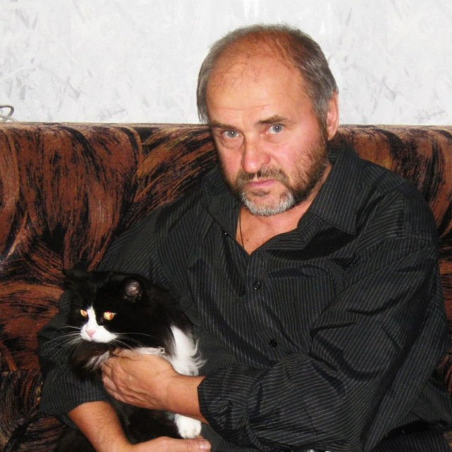
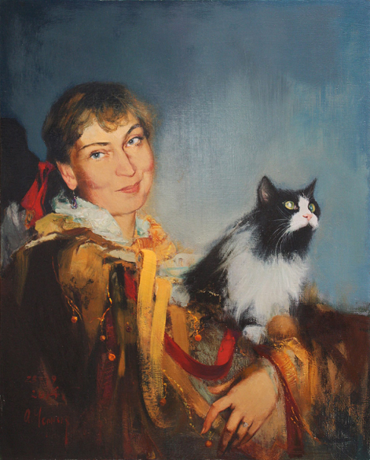
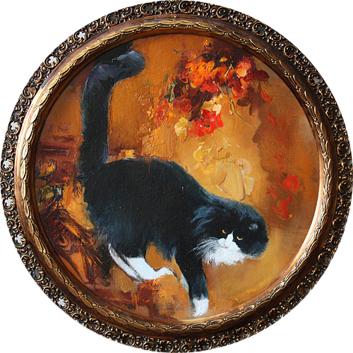
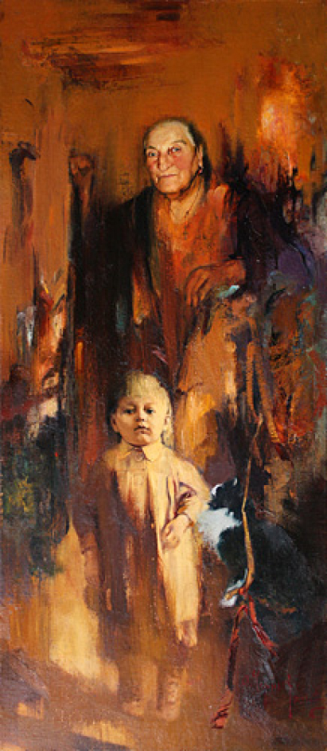

1988
1988-
1993
1993
Закончил факультет графики Академии Художеств имени И.Е. Репина (Санкт-Петербург). Дипломная работа — серия офортов «Певец и время. Владимир Высоцкий».
Работал преподавателем рисунка и живописи Академического художественного лицея имени Б.В. Иогансона Российской Академии Художеств.
2011
Академик Петровской академии наук и искусств.
2013
Почетная грамота Министерства культуры Российской Федерации за портреты выдающихся деятелей Российской и мировой культуры Ю.Х.Темирканова и Валерия Гергиева.
2014
Диплом Российской Академии художеств за портреты выдающихся деятелей Российской и мировой культуры Ю.Х.Темирканова и Валерия Гергиева.
2018
Почетная грамота Комитета по культуре правительства Санкт-Петербурга.
2022
Почетная грамота Законодательного Собрания Санкт- Петербурга.

Оля с Чернышкой
Моя единственная муза


Мама
Произведения А.В.Черных находятся в следующих собраниях:
Государственный культурный центр - музей В.С. Высоцкого (г. Москва).
Серия офортов "Певец и время. Владимир Высоцкий" . 1988.
Центральный выставочный зал "Манеж" (г. Санкт-Петербург).
Оренбургский областной музей изобразительных искусств.
Федеральный арбитражный Суд Северо-Западного округа (г. Санкт-Петербург).
Российская Национальная библиотека (г. Санкт-Петербург).
Дворец Белосельских-Белозерских, Музей становления Российской демократии (г. Санкт-Петербург).
Дворец Бракосочетания № 1 (г. Санкт-Петербург).
Санкт-Петербургский государственный университет физической культуры имени П.Ф. Лесгафта.
ФГОУ ВПО Академия Русского балета имени А. Я. Вагановой.
Выставочный центр "Эрмитаж - Выборг".
Государственный музей истории города.Санкт- Петербург
Донецкий республиканский художественный музей
Серия офортов "Певец и время. Владимир Высоцкий" . 1988.
Центральный выставочный зал "Манеж" (г. Санкт-Петербург).
Оренбургский областной музей изобразительных искусств.
Федеральный арбитражный Суд Северо-Западного округа (г. Санкт-Петербург).
Российская Национальная библиотека (г. Санкт-Петербург).
Дворец Белосельских-Белозерских, Музей становления Российской демократии (г. Санкт-Петербург).
Дворец Бракосочетания № 1 (г. Санкт-Петербург).
Санкт-Петербургский государственный университет физической культуры имени П.Ф. Лесгафта.
ФГОУ ВПО Академия Русского балета имени А. Я. Вагановой.
Выставочный центр "Эрмитаж - Выборг".
Государственный музей истории города.Санкт- Петербург
Донецкий республиканский художественный музей
Также его работы можно встретить в частных коллекциях России, Франции, Италии, Греции, Канады, США, Бразилии, Швеции, Финляндии, Норвегии, Израиля, Австралии, Японии, Германии
© Анатолий Черных персональный сайт